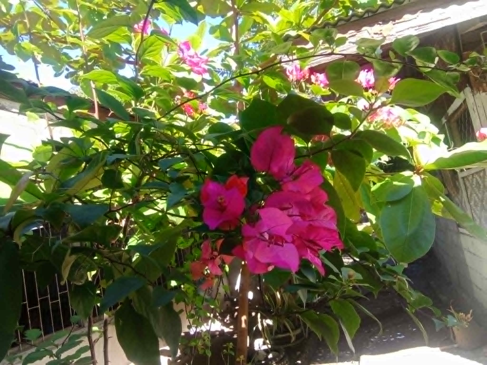

This is a special photograph that I took on a memorable day. The image captures a moment that means a lot to me, and I wanted to share the story behind it. Every photo tells a story, and this one is no exception. It represents a time when I was surrounded by beauty and joy.
When I look at this photo, I remember exactly how I felt at that moment. I was peaceful and curious, and I knew I had to capture it. This picture reminds me of the importance of slowing down and appreciating the little things in life. It's more than just an image—it's a window into a cherished memory.
Taking this photograph taught me a valuable lesson about perspective and mindfulness. I realized that moments pass quickly, and it's important to stop and really observe what's around us. This image will always serve as a reminder of that day and the feelings I experienced. I'm grateful to have this photo as a keepsake of such a meaningful time.